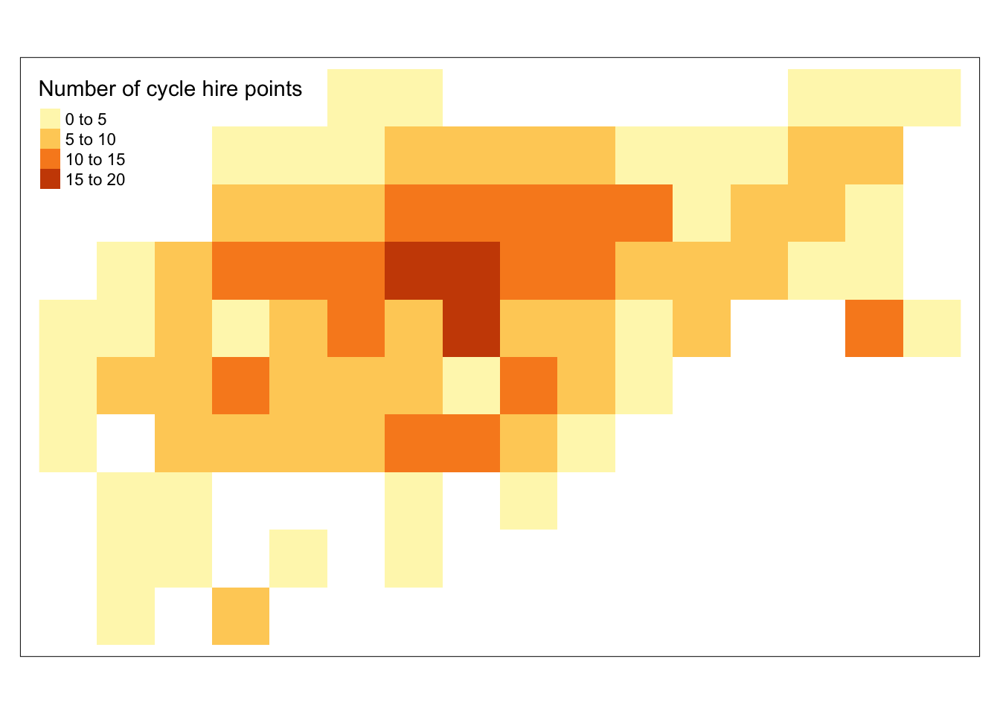

library(sf)
library(terra)
library(tidyverse)
library(tmap)
library(spDataLarge)EDS 223: Week 6
“Rasterization”: process of representing vector objects as raster objects. You might do this to: - use raster operations in your analysis
standardize with other data used in analysis (this is typically why we rasterize)
simplify data to reduce computational load
aggregate data to standard grid
Line and polygon rasterization
# load Zion park boundary (vector object we will rasterize)
boundary <- read_sf(system.file('vector/zion.gpkg', package = 'spDataLarge'))
# load elevation raster (to use as a template raster)
elevation <- terra::rast(system.file('raster/srtm.tif', package = 'spDataLarge'))# check and transform coordinate reference systems
if(crs(elevation) == crs(boundary)) {
print("Coordinate reference systems match")
} else{
warning("Updating coordinate reference systems to match")
# transform data to match
boundary <- st_transform(boundary, st_crs(elevation))
}Rasterization gives different results for polygon versus line vector objects.
Rasterized polygons: all grid cells intersecting polygon (including cells inside polygon)
Rasterized lines: grid cells intersecting line (excluding cells potentially enclose by line)
Check to see if the park boundary is represented as a polygon or line
if(sf::st_geometry_type(boundary) == "POLYGON") {
print("polygon data")
} else{
print("not polygon data")
}[1] "polygon data"We’re going to create a line version of our polygon for manipulation’s sake here
# update park boundary object name to clarify that it's a polygon
park_polygon <- boundary
# create line version park boundary
park_border <- boundary %>%
sf::st_cast(., "MULTILINESTRING")
# initial maps to see different data types
tm_shape(park_polygon) +
tm_polygons()tm_shape(park_border) +
tm_lines()Let’s rasterize!
# the rasterize function takes in the object to rasterize and then a template object
polygon_raster <- terra::rasterize(park_polygon, elevation)
border_raster <- terra::rasterize(park_border, elevation)# plot rasterized results
tm_shape(polygon_raster) +
tm_raster()tm_shape(border_raster) +
tm_raster()Rasterizing without a pre-existing raster –> create template from scratch
# create a template raster with low spatial resolution
template_raster_low <- terra::rast(ext(park_polygon),
resolution=0.05,
crs=st_crs(park_polygon))
# create a template raster with high spatial resolution
template_raster_high <- terra::rast(ext(park_polygon),
resolution=0.01,
crs=st_crs(park_polygon))
# rasterize to low resolution template raster
polygon_raster_low <- terra::rasterize(park_polygon, template_raster_low)
# rasterize to high resolution template raster
polygon_raster_high <- terra::rasterize(park_polygon, template_raster_high)# plot results to see what a difference resolution makes
tm_shape(polygon_raster_low) +
tm_raster()tm_shape(polygon_raster_high) +
tm_raster()cycle_hire_osm <- spData::cycle_hire_osm
cycle_hire_osm_projected <- st_transform(cycle_hire_osm, 'EPSG:27700')
template_raster <- terra::rast(ext(cycle_hire_osm_projected),
resolution = 1000,
crs =crs(cycle_hire_osm_projected))Rasterizing point data
tm_shape(cycle_hire_osm_projected) +
tm_symbols()Three versions of rasterization to produce:
raster representing the presence/absence of cycle hire points
raster representing the number of cycle hire points
raster representing the total capacity of cycle hire points
# presence / absence of cycle hire points
ch_raster1 <- terra::rasterize(cycle_hire_osm_projected, template_raster)
tm_shape(ch_raster1) +
tm_raster()# count up number of points
ch_raster2 <- rasterize(cycle_hire_osm_projected, template_raster,
fun = "length")
tm_shape(ch_raster2) +
tm_raster(title="Number of cycle hire points")
# total capacity of cycle hire points --> sum of each points' capacity
ch_raster3 <- rasterize(cycle_hire_osm_projected, template_raster,
field = "capacity", fun = sum, na.rm = TRUE)
tm_shape(ch_raster3) +
tm_raster(title="Total capacity")